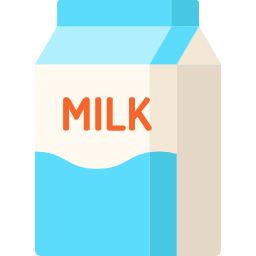

Rice MilkShake
🠴 Back to Homepage
::: Ingredients :::
- Water (2 Lts)
- Rice (1 Cup)
- Sugar (1 ½ Cup)
- Powder Milk (1 ½ Cups)
- Cinnamon (1 Spoon or 1 Stick)
- Vanila (2 Spoons)
- Condense Milk (Optional)



::: Utensils :::
::: Procedure :::
- At high heat, boil the cup of rice in ½ Lts of water
Boil and stir it until it has absorb most of the water,
and then, turn
-
mix apart in 1 ½ Lts of water;
Vanila, Sugar,
Cinnamon and Powdered Milk.
-
In a blender:
- Add 2 cups of the cooked rice
- Add 2 ½ cups of milk mixture
- blend and repeat with the rest of the ingredients
E N J O Y !
🠴 Back to Homepage